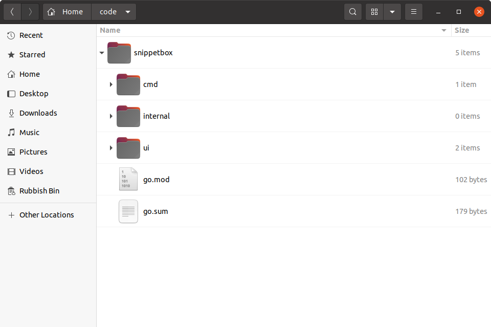

ماژولها و ساختهای قابل تکرار
حالا که درایور MySQL نصب شده است، بیایید به فایل go.mod نگاهی بیندازیم (که درست در ابتدای کتاب ایجاد کردیم). باید یک بلوک require با دو خط حاوی مسیر و شماره نسخه دقیق پکیجهایی که دانلود کردید ببینید:
module snippetbox.alexedwards.net
go 1.23.0
require (
filippo.io/edwards25519 v1.1.0 // indirect
github.com/go-sql-driver/mysql v1.8.1 // indirect
)
این خطوط در go.mod اساساً به دستور Go میگویند که دقیقاً کدام نسخه از یک پکیج باید هنگام اجرای دستوری مانند go run، go test یا go build از دایرکتوری پروژه شما استفاده شود.
این باعث میشود که داشتن چندین پروژه روی همان ماشین که نسخههای مختلف همان پکیج استفاده میشود آسان شود. به عنوان مثال، این پروژه از v1.8.1 درایور MySQL استفاده میکند، اما میتوانید یک کدبیس دیگر روی کامپیوتر خود داشته باشید که از v1.5.0 استفاده میکند و این کاملاً درست است.
همچنین خواهید دید که یک فایل جدید در ریشه دایرکتوری پروژه شما به نام go.sum ایجاد شده است.

این فایل go.sum شامل چکسامهای رمزنگاری است که محتوای پکیجهای مورد نیاز را نشان میدهد. اگر آن را باز کنید، باید چیزی شبیه این ببینید:
filippo.io/edwards25519 v1.1.0 h1:FNf4tywRC1HmFuKW5xopWpigGjJKiJSV0Cqo0cJWDaA= filippo.io/edwards25519 v1.1.0/go.mod h1:BxyFTGdWcka3PhytdK4V28tE5sGfRvvvRV7EaN4VDT4= github.com/go-sql-driver/mysql v1.8.1 h1:LedoTUt/eveggdHS9qUFC1EFSa8bU2+1pZjSRpvNJ1Y= github.com/go-sql-driver/mysql v1.8.1/go.mod h1:wEBSXgmK//2ZFJyE+qWnIsVGmvmEKlqwuVSjsCm7DZg=
فایل go.sum برای ویرایش دستی طراحی نشده است و به طور کلی نیازی به باز کردن آن نخواهید داشت. اما دو عملکرد مفید دارد:
اگر دستور
go mod verifyرا از ترمینال خود اجرا کنید، این تأیید میکند که چکسامهای پکیجهای دانلود شده روی ماشین شما با ورودیهایgo.sumمطابقت دارند، بنابراین میتوانید مطمئن باشید که تغییر نکردهاند.$ go mod verify all modules verified
اگر شخص دیگری نیاز به دانلود تمام وابستگیها برای پروژه داشته باشد — که میتواند با اجرای
go mod downloadانجام دهد — در صورت عدم تطابق بین پکیجهایی که دانلود میکند و چکسامهای موجود در فایل، خطا دریافت خواهد کرد.
بنابراین، به طور خلاصه:
- شما (یا شخص دیگری در آینده) میتوانید
go mod downloadرا اجرا کنید تا نسخههای دقیق همه پکیجهایی که پروژه شما نیاز دارد را دانلود کنید. - میتوانید
go mod verifyرا اجرا کنید تا اطمینان حاصل کنید که هیچ چیز در آن پکیجهای دانلود شده به طور غیرمنتظره تغییر نکرده است. - هر زمان که
go run،go testیاgo buildرا اجرا میکنید، نسخههای دقیق پکیجهای فهرست شده درgo.modهمیشه استفاده خواهند شد.
و این موارد در کنار هم، ایجاد قابل اعتماد ساختهای قابل تکرار از برنامههای Go شما را بسیار آسانتر میکند.
اطلاعات اضافی
ارتقای پکیجها
پس از دانلود یک پکیج و افزودن آن به فایل go.mod شما، پکیج و نسخه «ثابت» میشوند. اما دلایل زیادی وجود دارد که ممکن است بخواهید در آینده به نسخه جدیدتری از یک پکیج ارتقا دهید.
برای ارتقا به آخرین نسخه جزئی یا وصله موجود از یک پکیج، میتوانید به سادگی go get را با پرچم -u مانند این اجرا کنید:
$ go get -u github.com/foo/bar
یا به طور جایگزین، اگر میخواهید به یک نسخه خاص ارتقا دهید، باید همان دستور را با پسوند مناسب @version اجرا کنید. به عنوان مثال:
$ go get -u github.com/foo/bar@v2.0.0
حذف پکیجهای استفاده نشده
گاهی ممکن است یک پکیج را go get کنید و بعداً متوجه شوید که دیگر به آن نیاز ندارید. وقتی این اتفاق میافتد، دو انتخاب دارید.
میتوانید یا go get را اجرا کنید و مسیر پکیج را با @none پسوند دهید، مانند این:
$ go get github.com/foo/bar@none
یا اگر همه ارجاعات به پکیج را در کد خود حذف کردهاید، میتوانید go mod tidy را اجرا کنید، که به طور خودکار هر پکیج استفاده نشده را از فایلهای go.mod و go.sum شما حذف میکند.
$ go mod tidy